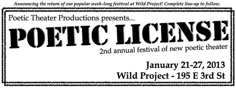

past performances | ||
|  | ||
|
POETIC LICENSE: A Festival of New Poetic Theater Produced by Poetic Theater Productions Poetic License is Poetic Theater Production's second annual festival of new poetic theater, take place January 21-27. The 2013 Festival will include stories by more than 20 writers including LGBT, youth, Black, Latina, Veteran, Native American and Asian American artists writing about war, mental health, identity, love, politics and memory in Juarez, Ghana, Iraq, Afghanistan, Vietnam, and all over America. The festival will feature more than 75 artists over 7 days in 15 performances. Poetic License will also feature productions of Caroline Rothstein's faith and Eboni Hogan's Foreign Bodies which had readings in last year's festival and sold out their performances in Culture Project's Women Center Stage 2012 Festival in April. Caroline's poem "fat" has recently gone viral on Twitter thanks to a tweet from Lady Gaga! Here is a sneak preview of our line-up so far: complete line-up to be announced 12/21! Contribute to the campaign to be the first to receive festival updates! Keep up with the latest POETIC LICENSE information at: www.poetictheater.com/festival OBAMATRY: A Spoken Word Remix on the 44th President of the United States written and performed by Darian Dauchan (produced in association with Bowery Arts + Science, Ltd.) FAITH, a gut-wrenching coming of age story, written and performed by Caroline Rothstein. FOREIGN BODIES, where writer Eboni Hogan delivers an unflinchingly true testament to the complexities of the fragile mind, the breakable body and the resilient heart. Mahogany L. Browne’s BLACK GIRLS DON'T SMILE MOSAIC IN FRONT OF STRANGERS (co-presented with the Hip-Hop Theater Festival), a story of transformation in the heart/cracked globe of a city where apples, lights and love seek refuge. BREAKING OUR SILENCE, featuring LGBTQ poets sharing their experiences of coming out, finding love and crashing through the barriers of shame and silence to emerge into a new world, curated by Joanna Hoffman and Elliott D. Smith. GENERATION NOW, featuring viBe Theater Experience, Girl Be Heard (formerly Project Girl) and Urban Word NYC. Warrior Writers NYC’s FROM TABLE TO STAGE. Play readings include BRAIDED SORROW by Marisela Treviño Orta, BLOOD QUANTUM by Tanaya Winder and THE WILL TO KNOWLEDGE by Takeo Rivera (playwright of the award-winning spoken word choreopoem, Goliath). Choreographer Natalia Duong will premiere a new poetic movement piece. |
upcoming performances |
|||
 |
|||
| EVQ Film Festival 2018 August 20-25 |
|||
performance archives |
|||
| 2018 | 2017 | 2016 | 2015 |
| 2014 | 2013 | 2012 | 2011 |
| 2010 | 2009 | 2008 | 2007 |